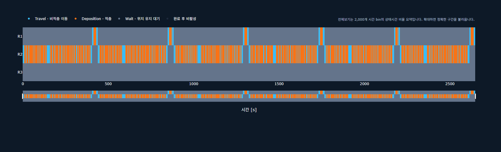
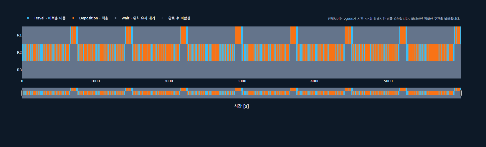
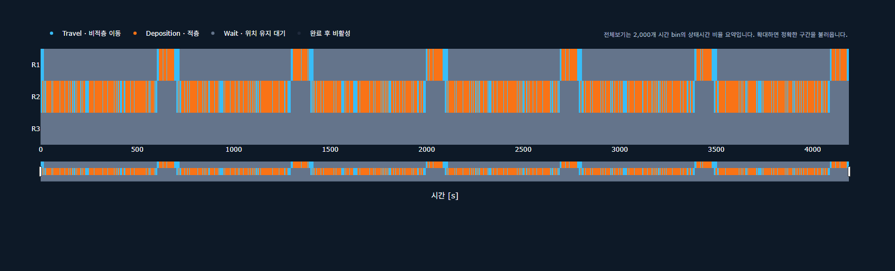
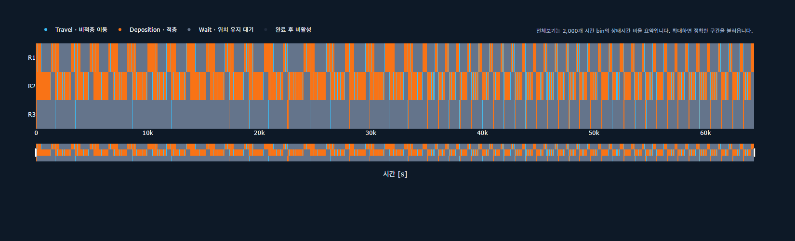
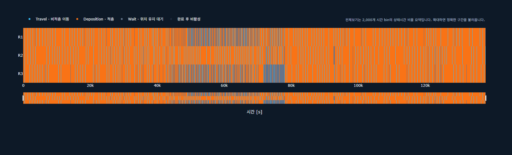
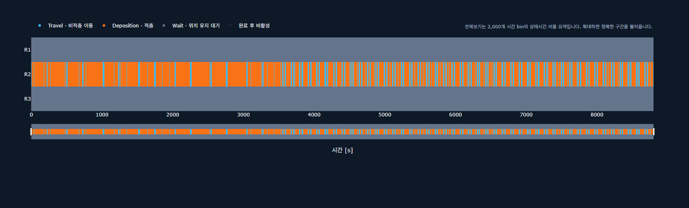

00:00:44:08 | Validator PASS

Interactive Validator Gantt Trajectory Validator JSON
00:01:39:54 | Validator PASS

Interactive Validator Gantt Trajectory Validator JSON
00:01:09:48 | Validator PASS

Interactive Validator Gantt Trajectory Validator JSON
00:17:52:37 | Validator PASS

Interactive Validator Gantt Trajectory Validator JSON
01:14:20:19 | Validator PASS

Interactive Validator Gantt Trajectory Validator JSON
00:02:26:40 | Validator PASS
